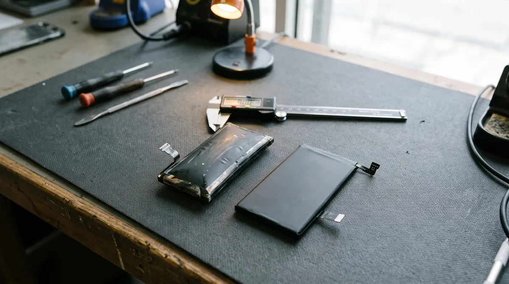
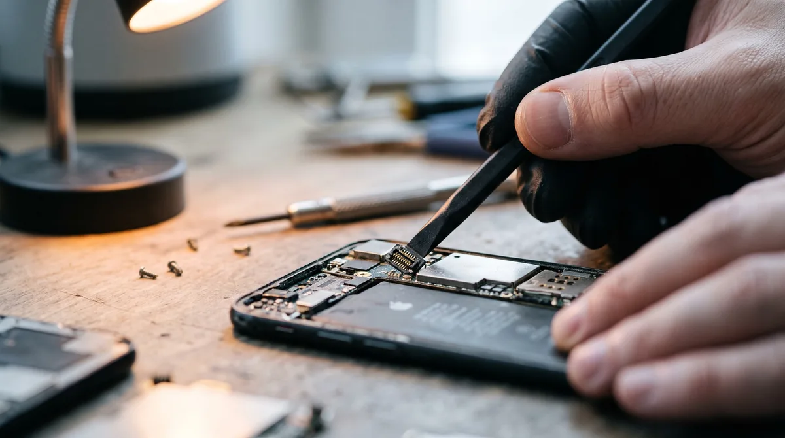

Замена аккумулятора на телефоне: когда пора, как проходит и что делать после
Телефон выключается на 15%? Греется в кармане и к обеду в третий раз просит розетку? Вздулся экран или задняя крышка? Это не «глюк системы» и не вирусы. Это химический износ литий-ионной батареи.
Ресурс современных АКБ — около 500–800 полных циклов. В реалиях 2026 года это примерно 2–3 года активной работы. Когда химия внутри деградирует, контроллер начинает неправильно считать остаток емкости, а сама батарея теряет токоотдачу. В этом случае замена аккумулятора на телефоне — единственный способ вернуть аппарату нормальную автономность.
Почему батарею нельзя менять самому
Забудьте времена, когда элемент питания менялся за минуту: поддел крышку монеткой, поставил новую. Сейчас всё иначе. Аккумулятор намертво приклеен к задней крышке или металлической рамке на мощный двусторонний скотч.
Пытаться оторвать его дома отверткой или ножом — плохая идея. Риск проткнуть банку составляет около 50%. Итог такой самодеятельности — не просто ремонт, а термическая реакция, едкий дым, пожароопасная ситуация и сгоревший контроллер питания на материнской плате. В сервисе мы сначала прогреваем корпус, наносим специальный растворитель для размягчения клея и работаем вакуумными присосками. Это безопасно и быстро.

Особенности замены для разных брендов
Конструкция аппаратов отличается, и подход к разборке тоже разный.
Samsung
Смена АКБ на телефоне самсунг часто требует ювелирной аккуратности из-за стеклянных задних панелей и наличия влагозащитных уплотнителей. После сборки мы обязательно восстанавливаем герметичность защитного контура, чтобы пыль и влага не попадали внутрь.
Xiaomi и Redmi
Замена аккумулятора на телефоне редми или xiaomi — одна из самых востребованных процедур. У этих аппаратов отличные емкие батареи, но из-за очень плотной компоновки материнской платы мастеру важно не повредить шлейфы при снятии старой банки.
Tecno и Infinix
Замена АКБ на техно или инфиникс обычно проходит чуть быстрее. Конструкция этих брендов часто позволяет мастеру быстрее получить доступ к внутренностям, но клей все равно требует обязательного термического воздействия.
Сроки и стоимость
Сколько длится процедура? В 90% случаев мы укладываемся в 30–40 минут. Вас попросят оставить аппарат на час, пока мастер проводит тесты.
Сколько стоит замена аккумулятора на телефоне? Цена складывается из стоимости самой батареи (оригинал или проверенная копия высокого качества) и сложности разборки конкретной модели. Точную цифру мастер назовет после визуального осмотра.

После замены: что нормально, а что нет
Новая батарея — это не всегда мгновенное решение всех проблем, если не учесть нюансы калибровки и сборки.
Как заряжать телефон
Новая батарея еще не «знает» своих реальных границ. Первые 3-4 цикла просто зарядите телефон до 100% и пользуйтесь в обычном режиме, пока не появятся системные предупреждения о 15-20%. Не нужно намеренно разряжать его «в ноль» — это вредно для современной литий-ионной химии.
После ремонта телефон не включается
Паниковать рано. Часто новая батарея имеет глубокий заводской разряд. Контроллер питания телефона просто не видит «толчка» для старта. Мы «раскачиваем» ее через лабораторный блок питания за 5 минут. Если вы забираете телефон из другого сервиса с такой проблемой — скорее всего, мастер забыл плотно защелкнуть коннектор или повредил шлейф.
После ремонта смартфон не заряжается
Сначала исключите банальное: проверьте кабель, блок питания и почистите разъем от карманной пыли. Если с ними все ок, а реакции нет — проблема в нижнем шлейфе разъема (его могли задеть при разборке) или в браке самой новой батареи (сбой ее внутреннего BMS-контроллера).
FAQ
Теряются ли данные при ремонте?
Нет. Ваши фото, переписки, приложения и контакты хранятся на чипе памяти. При ремонте вы их не потеряете. Единственный теоретический риск — если до этого телефон падал в воду и плата уже окислялась, но это не вина самой процедуры замены.
Нужно ли полностью разряжать и заряжать новую батарею по 12 часов?
Нет. Это миф из эпохи никель-кадмиевых аккумуляторов. Для литий-ионных батарей это только вредит. Заряжайте по мере необходимости.
Нужна помощь профессионалов?
Не рискуйте техникой и нервами. Приносите аппарат в Doctor Phone в Мариуполе. Мы используем качественные расходники, даем гарантию на работу и вернем вашему смартфону вторую жизнь.
Звоните или пишите в мессенджеры — проконсультируем по цене и наличию батарей для вашей модели прямо сейчас!